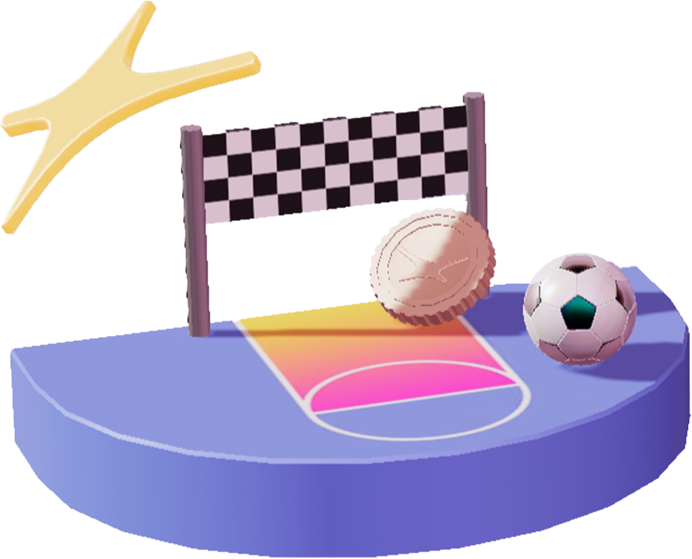
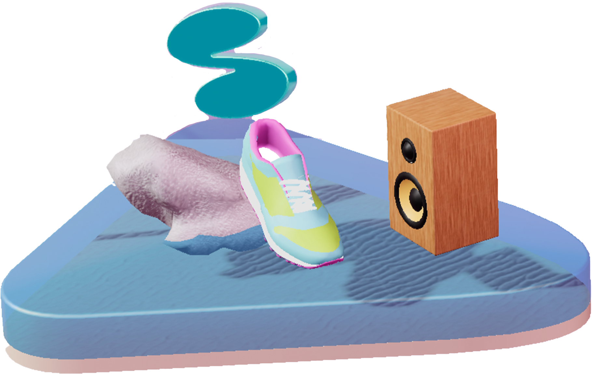
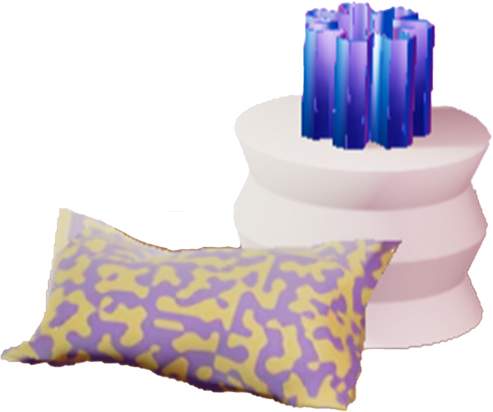
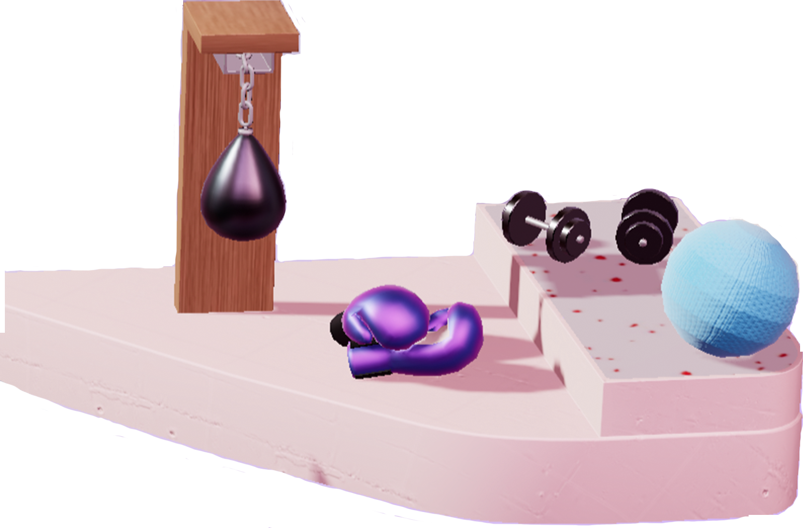

Khanh Toan Nguyen (Tony)
s3999152
RMIT University
Interactive Media 1 (OART1013)
Semester 1 March 2024
Fisrt Impression

The first things come straight to my eyes the 4 floating 3d sections in term of objects and another one as a background behind. The project's name is obviously behind the objects but readable and easy to perform to the user at the first glance. The pastel color palette also puts a stress on the concept of the project while it creates an environment of a playground with games, sports and trees around. The whole picture fully express the developer team vibes of a dynamic, friendly and colorful environment.
List of Actions
- Focus on the objects stand for the menu: all the 3d objects can interact when I move the mouse curser to them (moving up down, …)
- Start moving and scrolling the mouse: (the floating items move backwards to the movement of the curser in the way they are floating) (scroll to change between the pages)
-
Explore the menu (each page contains some small games that user can use the curser to control)
OMADA (the page with 2 games soccer and basketball illustrates the omada app which is a game-based app for sport betting without money) SPARK (some phones, speaker shoes stand for the life styling app providing a 3d virtual coach) KITCHEN LAB (a reduced living room on the page and the content is an endless scrolling page with collections of elements and graphics like a gallery) COACH+ (the page consists of a boxing ring and yoga place, which refers to the “Coach App” to follow and assist the user in doing fitness)  - About Us (the introduction of the company in which people create apps products and brands)
- Find out “the 9 talents” (the employing page to the developer of the company) View the social media link (linkedin and twitter)
Mostly engage with
I spent the most time on the mini games on the Omada page playing emulated soccer and basketball game. The games are simple and easy to play but the interactions are smooth and the figures are cartoonated, which really appeals to me. The most satisfying part is when I score a point, there will be an emission of coins which stimulate the users with the feeling of winning. Besides, the games contain competitive elements which are the point records of players, so that users are eager to break the record and spend more time in the website
Most common action
Most of the time interacting with the website, moving the mouse curser around is one of the most frequent actions I have as all the 3D objects are programmed to react back in the way of moving backwards to the curser. This effect is obviously pre-calculated since the action of moving the curser is the most common action when people use the computer
Intended primary goal
I am deeply impressed by the combination of the applications concepts and the interactive figures. The 3D models are created to demonstrate the content and meaning of each page and interact directly with the user actions. Therefore, it is visible that the pimary goal of the project is to introduce the company's projects on apps in which lifestyle and sports are the targets. On the other hands, the delivery of the project also aims to approach the teenagers or youngster owing to the youthful and dynamic colors and concept while having a healthy lifestyle is alert and prior to be cope with among the young in the modern age.
Way of goal communication
Before getting in exploring the app, user can play around with the mouse curser by clicking the objects and see the reactions. This helps the users to have the initial figuration of the app without reading any introduction and they can enjoy some sort of entertainment as well
Impression of interacting over time
The most impressive part of the project is the interactive effect when moving the curser around. I was absorbed in playing around with that for half an hour and see the differences between pages. For instance, the objects will spread out and then move slightly when the curser move towards. In addition, the menu bars will lean towards the curser on any sides
Way of over time interaction communication
The developer tended to create 3D objects with slow but smooth movements, which raises users’ curiosity and spent their time playing around first before getting into the information. The transition between the pages may be frustrating to a number of people but it, in some ways, lengthen the amount of time users experience the website
Other media form(s)
Beside the 2 lifestyle and fitness app (Spark and Coach+) there is also another game app for sport betting but generally legal without using real money, where users can interact and compete with each other. The new form of media contributes to the diversity of the company developments in applications which promote their activities and vary the range of the customers, which in this case are the sportaholic
| Term of action | Term of feeling | The reference helps me to prepare for research by investigate the market where the trends can be the target. In this situation, sport betting is always known as one of the most popular means of entertainment in many nations. Nevertheless, this form of gambling is strictly banned in some countries for various reasons. From this using electronic coins or money inside the game is a sensible solution for this game to reach many markets. | The reference helps me to understand the psychology of users while betting can stimulate their winning feeling. In this case, there won’t be any financial risk so people are willing to have a big bet. This refer to a vital step in doing research which is showing sympathy to the users as everyone has their fear of big loss. The solution is to make the bad things turn good by using electronic coins in the game for betting, which ease the players’ mind when they lose as eventually, “it is just a game” |
|---|
| Most frustrating thing | Most satisfying thing | One of the most annoying parts is the dead time when user switch the page by scrolling the curser. It takes about 3-4 seconds not too much but enough to make people frustrated when they want to explore more. Furthermore, I can see an overuse of icons in the descriptions of the recruiting section that the website will look less professional and serious in employing process | What comes most appealing is the movements of the 3D objects, slight floating when the mouse curser moves to. It creates the feeling of relieving and even interactive when the users doing nothing. People can constantly see some of the moving things in any page even when they apply no actions on the computer such as text scrolling, car racing and tree moving |
|---|